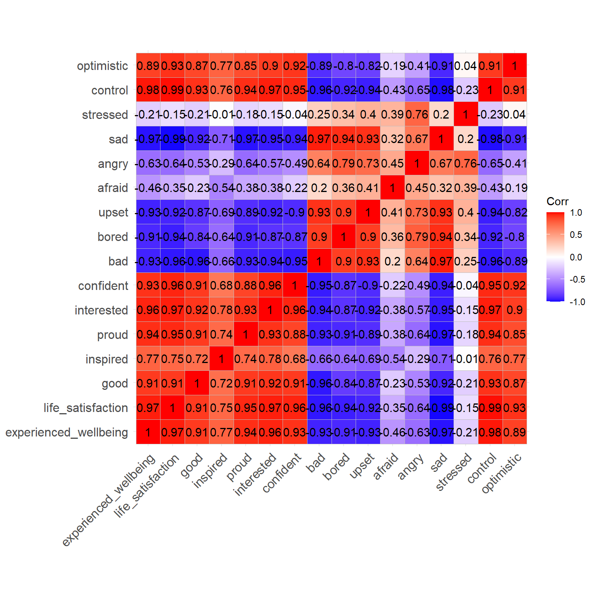
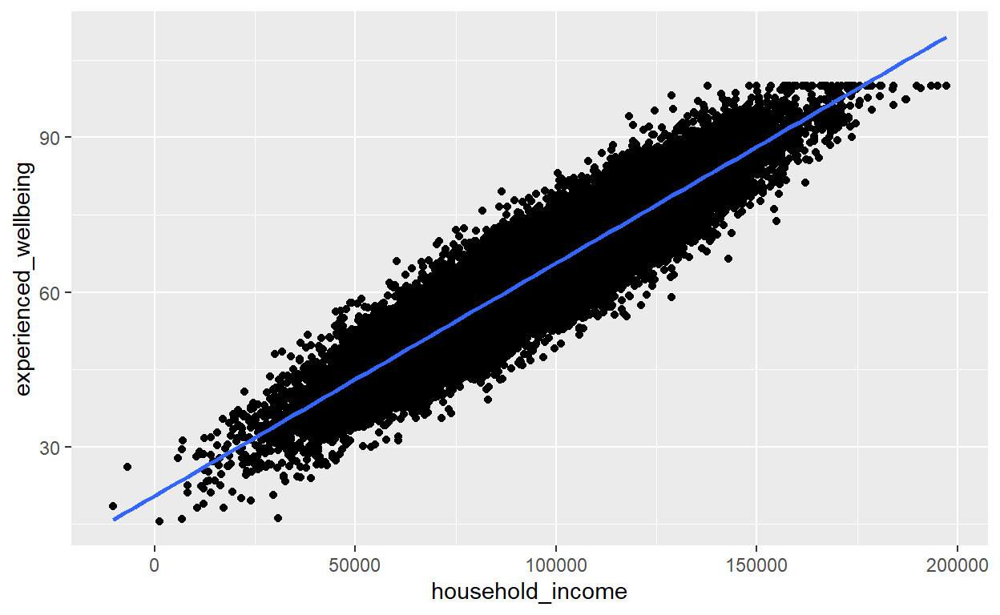
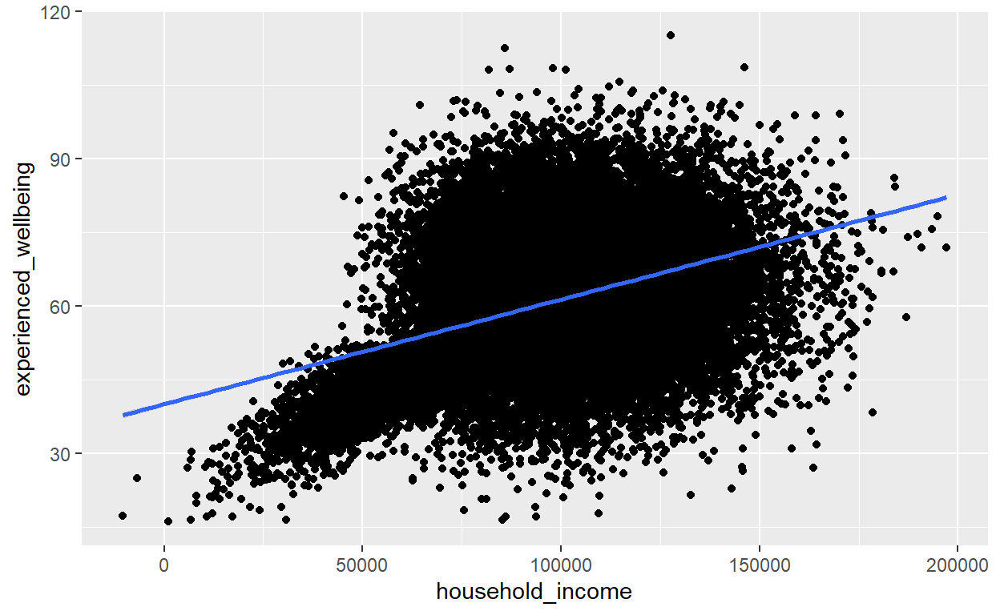
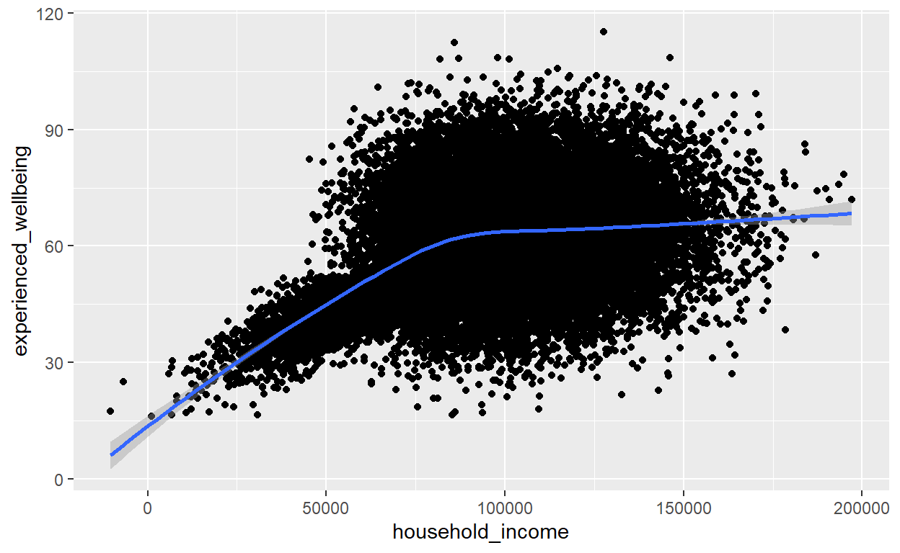

income_wellbeing <- read.csv("income_wellbeing.csv")
single_subject_wellbeing_2010 <- read.csv("single_subject_wellbeing_2010.csv")
single_subject_wellbeing_2021 <- read.csv("single_subject_wellbeing_2021.csv")מבוא
היום אנחנו נלמד כיצד לבחון מגמות לינאריות בנתונים שלנו. תזכורת, מגמה לינארית מתארת מצב בו הקשר בין שני משתנים (למשל רמת העושר והכנסה) יכולה להיות מתוארת על ידי קו ישר (למשל, ככל שההכנסה גבוהה יותר כך גם רמת העושר). המבחנים בהם נעסוק היום יעזרו לנו להבין עד עד כמה מתקיים קשר לינארי בין שני משתנים והאם קשר זה מובהק.
היכרות עם הנתונים
בחלק זה אנחנו נעבוד עם סיכום של נתוני מדגם אמיתי אשר בחן את הקשר בין מרכיבים שונים של אושר - למשל, סיפוק מהחיים, השראה, כמות הרגשות הטובים, כמות הרגשות הרעים, גאווה, עניין, שיעמום, בטחון עצמי, לחץ, אופטימיות. כל אלה נדגמו על בסיס יומי לאורך תקופה. הציון בכל אחד ממדדי האושר מתבסס על דירוג בין 1-100. בנתונים שלנו (income_wellbeing)נמצאים הממוצעים של תשובות המשתתפים מקובצים לפי רמת ההכנסה (באלפי דולרים לשנה), כך שכל תצפית היא בעצם ממוצע של בתוך משתתף (על פני מספר הפעמים שנדגם) ובין המשתתפים השונים באותה רמת הכנסה. (houshold_income). בנוסף יש לנו מספר נתונים דמוגרפיים ונתונים על היחס של המשתתפים לכסף.
מקורות: High income improves evaluation of life but not emotional
well-being (Daniel Kahanman)
Experienced well-being rises with income, even above $75,000 per year
(Matt Killingsworth)
# נתבונן בנתונים
head(income_wellbeing)קורלציה
כדי לחשב קורלציה אנחנו נשתמש בפונקציהcor.
אלו הם הארגומנטים שהפונקציה מקבלת:
x - הנתונים עליהם נרצה לחשב קורלציה. אפשר להכניס מבנה
נתונים שלם או וקטור.
y - במידה וx הוא וקטור אנחנו חייבים להכניס גם את y
והקורלציה שתחושב תהיה בין x לy.
method - השיטה לחישוב הקורלציה. ברירת המחדל היא קורלציית
פירסון אבל ניתן לחשב גם קורלציית ספירמן עלי ידי הכנסת הביטוי
“spearman”.
use - באיזה תצפיות להשתמש
הארגומנט use דומה מאוד לארגומנט na.rm שהכרנו בהקשר של פונקציות
קודמות. כלומר, השימוש העיקרי שלו היא התמודדות עם ערכים חסרים.
אבל יש קצת יותר אפשרויות במקרה של קורלציה כיוון שהתצפיות תמיד מזווגת.
אפשרות ברירת המחדל של הארגומנט use היא ”everything“, אשר מקבילה
לna.rm=FALSE, האפשרות בקצה השני היא ”pairwise.complete.obs“, בה משתמשים
רק בזוגות של תצפיות ששתיהן ערכים מספריים. יש גם אופציות ביניים
”complete.obs” או ”na.or.complete”.
בואו נחשב קצת קורלציות.
# אז מבחינה של השאלון
# האם יש קשר בין סיפוק מהחיים ואושר?
# היינו מצפים לקשר חיובי בואו נראה
cor1 = cor(x=income_wellbeing$experienced_wellbeing, y=income_wellbeing$life_satisfaction)
cor1## [1] 0.9730595# קיבלנו ערך גבוה מאוד. נראה כי אכן אלה תופעות קשורות.
# עכשיו נבחן את הקשר בין רגשות חיובים לשליליים
cor2 = cor(x=income_wellbeing$good, y=income_wellbeing$bad)
cor2## [1] -0.9621019# עכשיו קיבלנו ערך גבוה מאוד ושלילי
# כלומר התופעות קשורות בקשר חזק ושלילי.תרגיל
בואו ניגש ישר לעניין, האם כסף קונה עושר?
חשבו את הקורלציה בין רמת ההכנסה (household_income) לרמת האושר
(experienced_wellbeing) והדפיסו אותה
main_cor <-main_cor = cor(x=income_wellbeing$household_income, y=income_wellbeing$experienced_wellbeing)
print(main_cor)טבלת קורלציה
הפונקציה cor מספקת לנו גם דרך נוחה לחשב מסה של קורלציות יחדיו. למשל במדגם מתאמי כמו המדגם המתואר בעצם נרצה לחשב את כל הקורלציות האפשריות בין כל המשתנים.
למשל, במידה ונרצה לתקף את השאלון ולחשב את הקורלציות בין כל שאלות השאלון
# ניצור טבלה חדשה רק עם שאלות השאלון
well_being_df <- select(income_wellbeing, -household_income, -money_importance, -money_is_succes, -workweek, -p_of_male, -p_married, -education_level,-age)
# נחשב את טבלת הקורלציות
well_being_corr_matrix <- cor(well_being_df)
print(well_being_corr_matrix)## experienced_wellbeing life_satisfaction good
## experienced_wellbeing 1.0000000 0.9730595 0.9136064
## life_satisfaction 0.9730595 1.0000000 0.9145070
## good 0.9136064 0.9145070 1.0000000
## inspired 0.7663116 0.7534519 0.7240512
## proud 0.9369865 0.9541226 0.9103295
## interested 0.9629872 0.9689789 0.9240529
## confident 0.9330375 0.9575879 0.9079083
## bad -0.9316826 -0.9570644 -0.9621019
## bored -0.9057188 -0.9385622 -0.8407778
## upset -0.9334423 -0.9186415 -0.8704607
## afraid -0.4570892 -0.3521910 -0.2283245
## angry -0.6271075 -0.6378589 -0.5312037
## sad -0.9703083 -0.9899928 -0.9179547
## stressed -0.2098274 -0.1521389 -0.2102424
## control 0.9785523 0.9856513 0.9277452
## optimistic 0.8908341 0.9295688 0.8651311
## inspired proud interested confident bad
## experienced_wellbeing 0.766311592 0.9369865 0.9629872 0.93303755 -0.9316826
## life_satisfaction 0.753451937 0.9541226 0.9689789 0.95758794 -0.9570644
## good 0.724051204 0.9103295 0.9240529 0.90790826 -0.9621019
## inspired 1.000000000 0.7441640 0.7817220 0.68472381 -0.6556910
## proud 0.744164041 1.0000000 0.9274576 0.87953503 -0.9340750
## interested 0.781722006 0.9274576 1.0000000 0.95687463 -0.9395569
## confident 0.684723808 0.8795350 0.9568746 1.00000000 -0.9498536
## bad -0.655690981 -0.9340750 -0.9395569 -0.94985365 1.0000000
## bored -0.636346599 -0.9068002 -0.8703407 -0.86550725 0.9013441
## upset -0.685464116 -0.8895160 -0.9226760 -0.89726408 0.9303804
## afraid -0.535454763 -0.3773614 -0.3800130 -0.21577196 0.2017757
## angry -0.289000921 -0.6404221 -0.5685421 -0.49231211 0.6377313
## sad -0.705088542 -0.9671620 -0.9475926 -0.93890939 0.9676481
## stressed -0.005342959 -0.1795456 -0.1517599 -0.04442096 0.2462892
## control 0.756603720 0.9372691 0.9651639 0.95056392 -0.9562861
## optimistic 0.768853493 0.8473211 0.9006164 0.92450900 -0.8906484
## bored upset afraid angry sad
## experienced_wellbeing -0.9057188 -0.9334423 -0.4570892 -0.6271075 -0.9703083
## life_satisfaction -0.9385622 -0.9186415 -0.3521910 -0.6378589 -0.9899928
## good -0.8407778 -0.8704607 -0.2283245 -0.5312037 -0.9179547
## inspired -0.6363466 -0.6854641 -0.5354548 -0.2890009 -0.7050885
## proud -0.9068002 -0.8895160 -0.3773614 -0.6404221 -0.9671620
## interested -0.8703407 -0.9226760 -0.3800130 -0.5685421 -0.9475926
## confident -0.8655072 -0.8972641 -0.2157720 -0.4923121 -0.9389094
## bad 0.9013441 0.9303804 0.2017757 0.6377313 0.9676481
## bored 1.0000000 0.9003204 0.3631002 0.7933301 0.9426011
## upset 0.9003204 1.0000000 0.4070416 0.7335631 0.9278414
## afraid 0.3631002 0.4070416 1.0000000 0.4479646 0.3235386
## angry 0.7933301 0.7335631 0.4479646 1.0000000 0.6708644
## sad 0.9426011 0.9278414 0.3235386 0.6708644 1.0000000
## stressed 0.3410353 0.3961484 0.3927026 0.7567037 0.2005093
## control -0.9225331 -0.9363785 -0.4253864 -0.6503354 -0.9760157
## optimistic -0.7994086 -0.8208775 -0.1917243 -0.4130329 -0.9139691
## stressed control optimistic
## experienced_wellbeing -0.209827417 0.9785523 0.89083409
## life_satisfaction -0.152138940 0.9856513 0.92956878
## good -0.210242402 0.9277452 0.86513109
## inspired -0.005342959 0.7566037 0.76885349
## proud -0.179545632 0.9372691 0.84732112
## interested -0.151759873 0.9651639 0.90061642
## confident -0.044420960 0.9505639 0.92450900
## bad 0.246289247 -0.9562861 -0.89064837
## bored 0.341035337 -0.9225331 -0.79940859
## upset 0.396148419 -0.9363785 -0.82087753
## afraid 0.392702567 -0.4253864 -0.19172427
## angry 0.756703704 -0.6503354 -0.41303287
## sad 0.200509340 -0.9760157 -0.91396910
## stressed 1.000000000 -0.2257877 0.03601395
## control -0.225787693 1.0000000 0.91012716
## optimistic 0.036013947 0.9101272 1.00000000# קצת קשה להתבונן בה כך
# נציג אותה כאיור
# שימו לב מדובר בחבילה חדשה לטובת איור זה
library(ggcorrplot)## Warning: package 'ggcorrplot' was built under R version 4.3.3ggcorrplot(well_being_corr_matrix, lab = TRUE)
מעולה, נראה שהשאלון שלנו אכן מתנהג כמו שהיינו מצפים - גורמים חיוביים, שהיינו מצפים שיהיו מקושרים לרמת אושר גבוהה (למשל בטיון,עניין, סיפוק ועוד) קשורים בקשר חיובי וחזק לתחושת אושר (well being) ואילו תכונות שליליות, שהיינו מצפים שיהיו מקושרים לרמת אושר נמוכנה (כעס, פחד, שיעמום) קשורים לאושר בקשר שלילי וחזק. שימו לב, טבלת הקורלציות היא בעצם משולש ולא ריבוע, שכן הקורלציה של כל משתנה עם עצמו היא תמיד 1 והקורלציה בין משתנה א’ למשתנה ב’ זהה לקורלציה בין משתנה ב’ למשתנה א’ (כלומר יש שני משלושי קורלציה זהים).
תרגיל
עכשיו נבחן את המשתנים הדמוגרפיים שלנו. בטבלה קיימים הנתונים הבאים:
רמת חינוך (education_level) - בין 1-10 (כאשר 1 = טרום יסודי ו10 =
דוקטור)
גיל (age)
מגדר (p_of_male) - הסיכוי להיות גבר בתוך כל קבוצה (1= כולם גברים, 0=כולם
נשים)
סטטוס (p_married) - הסיכוי להיות נשוי בתוך קבוצה (1= כולם נשואים, 0 =
כולם לא נשואים)
צרו טבלה שמחשבת את הקורלציות בין רמת ההכנסה (household_income) למשתנים הדמוגרפיים.
demo_df <-
demo_corr_matrix <-
ggcorrplot(demo_corr_matrix, lab = TRUE)
print(demo_corr_matrix)demo_df <- select(income_wellbeing, household_income, p_of_male, p_married, education_level,age)
demo_corr_matrix <- cor(demo_df)
ggcorrplot(demo_corr_matrix, lab = TRUE)
print(demo_corr_matrix)קיבלנו פה קורלציות גבוהות בין כל המשתנים. כלומר ככל שההכנסה גבוהה יותר המשתתפים היו בגדול גם מבוגרים יותר, נשואים יותר, גברים יותר ובעלי רמת השכלה גבוהה יותר.
בדיקת מובהקות
אז עד כה חישבנו את הקורלציות, אבל איך אנחנו יכולים לדעת האם הקורלציה
משמעותי מספיקת? עלינו לבדוק את מובהקות הקורלציה.
נוכל לעשות זאת באמצעות הפונקציה cor.test.
נחזור לדוגמה שהתחלנו איתה:
# תזכורת
cor1 = cor(x=income_wellbeing$experienced_wellbeing, y=income_wellbeing$life_satisfaction)
# ועכשיו לבדיקת המובהקות
cor_test_1 = cor.test(x=income_wellbeing$experienced_wellbeing, y=income_wellbeing$life_satisfaction)
# נדפיס את התוצאה
cor_test_1##
## Pearson's product-moment correlation
##
## data: income_wellbeing$experienced_wellbeing and income_wellbeing$life_satisfaction
## t = 15.217, df = 13, p-value = 1.156e-09
## alternative hypothesis: true correlation is not equal to 0
## 95 percent confidence interval:
## 0.9187677 0.9912311
## sample estimates:
## cor
## 0.9730595# כדי לבדוק אם הקורלציה מובהקת נשווה את התוצרה לרמת המובהקות שנבחר כך:
sig_level = 0.05
cor_test_1$p.value < sig_level## [1] TRUEההשוואה שמבוצעת במבחן זה בעצם בוחנת כמה סביר המדגם הנוכחי תחת השערת
האפס, אשר מניחה שאין קורלציה בין המשתנים. המבחן במקרה זה מבוצע באופן דו
זנבי, כאשר הp value קטן מרמת המובהקות שקבענו לעצמינו הסבירות של השערת
האפס קטנה מאוד ואפשר לדחות אותה.
הפלט כולל בתוכו לא מעט מידע. קודם כל, אתם יכולים לנחש שכדי לבדוק את
המובהקות של הקורלציה בעצם מסתמכים על מבחן t. עוד לא כיסינו את הנושא הזה
בקורס הנוכחי (או בקורס סטטיסטיקה) ולכן התוצות יהיו ברורות יותר לאחר
שנתעמק במבחן t עצמו. עם זאת להלן הסבר קצר.
אנחנו מקבלים ערך t מחושב, את כמות דרגות החופש (במבחן קורלציה החישוב הוא
מספר התצפיות פחות 2) וערך מובהקות (p value). אנחנו גם מקבלים את רווח
הסמך של הקורלציה, אשר במקרה זה הינו בין 0.918 ל0.991. לבסוף מודפס לנו
ממש ערך הקורלציה.
בואו נראה דוגמה נוספת, הפעם נבחר את המשתנים שהקשר בינהם קרוב ל0. חדי העין מבינכם יוכלו לבחור משתנים מהטבלה הראשונה שציירנו - למשל הקשר בין השראה ( inspired) ללחץ (stress).
# נתחיל ישר מבחינת המובהקות, שכן חישוב הקורלציה כלול בה
cor_test_3 = cor.test(x=income_wellbeing$stressed, y=income_wellbeing$inspired)
# נדפיס את התוצאה
cor_test_3##
## Pearson's product-moment correlation
##
## data: income_wellbeing$stressed and income_wellbeing$inspired
## t = -0.019265, df = 13, p-value = 0.9849
## alternative hypothesis: true correlation is not equal to 0
## 95 percent confidence interval:
## -0.5161930 0.5083111
## sample estimates:
## cor
## -0.005342959תרגיל
אז האם כסף קונה אושר בצורה מובהקת..?
בצעו מבחן מובהקות והדפיסו את הp-value.
main_cor_test <-
print(main_cor_test$p.value)main_cor_test = cor.test(x=income_wellbeing$experienced_wellbeing, y=income_wellbeing$household_income)
print(main_cor_test$p.value)מודל לינארי
הקורלציה מספקת לנו מידע לגבי חוזק הקשר בין שני משתנים, אך מודל
הרגרסיה יכול לאפשר לנו לתאר את הנתונים על ידי משוואה לינארית.
מה היא משוואה לינארית? זוהי משוואה אשר מתארת קו ישר שעובר בין שני מתשנים
וכוללת שני פרמטרים:
קבוע - ערך אשר מתאר את נקודת המפגש של הקו עם ראשית הצירים
(כלומר איזה ערך יתקבל במשתנה על ציר y כאשר המשתנה בציר הx יהיה שווה
ל0)
שיפוע - ערך המתאר את קצב העליה או הירידה של הקו
הפונקציה lm() היא הפונקציה שמאפשרת לנו להתאים מודל
לינארי לנתונים.
הפונקציה מקבלת את הארגומנטים הבאים:
formula - הנוסחה של המודל הלינארי, כך אפשר לפרט מהו המשתנה
המנובא ומה הם משתנים המנבאים (ניתן להכניס יותר ממשתנה אחד, במקרה של
רגרסיה מרובה). הפורמט של הנוסחה הוא: y ~ x
כאשר y הוא המשתנה התלוי (למשל רמת האושר) וx הוא המשתנה הבלתי תלוי, שאמור
להיות, למשל, במקרה שלנו רמת ההכנסה.
data - מבנה הנתונים עליו נרצה לבצע את התאמת המודל
subset - אפשרות לפרט תנאי שיסנן חלק מהשורות לפני ביצוע
התאמת המודל
na.action - מה לעשות במקרה שקיימים נתונים חסרים בנתונים.
דומה מאוד לna.rm. אופציית ברירת המחדל כאן היא na.fail כלומר שהמודל לא
יוכל לרוץ אם יש ערכים חסרים ונקבל שגיאה. כדי להשמיט את הערכים החסרים יש
להכניס na.omit.
עד כה עבדנו עם טבלה המסכמת את ממצאי המחקר שנערך ב2021. עבור מודל הרגרסיה
נעבור לעבוד עם נתונים של נבדקים בודדים, כדי שנוכל לתאר את המגמות בדיוק.
לטובת זאת נעבוד עם טבלה שנקראת 2021_single_subject_wellbeing. טבלה זאת
היא בעצם שחזור של נתוני הנבדקים הבודדים מהמחקר המקורי שהכרנו עד כה
ומכילה שחזור של נתוני הנבדקי הבודדים של מדד הwell being בלבד והכנסה
של.
בואו נראה דוגמה למודל רגרסיה עם הנתונים המלאים מ2021:
# נתחיל במודל של אושר לפי הכנסה
linear_model_2021 <- lm(experienced_wellbeing~household_income, data=single_subject_wellbeing_2021, na.action = "na.fail" )
# קיבלנו שגיאה, זה בגלל שהנתונים מכילים ערכים חסרים
# וביקשנו שהמודל לא ירוץ עם ערכים חסרים
# נתקן
linear_model_2021 <- lm(experienced_wellbeing~household_income, data=single_subject_wellbeing_2021, na.action = "na.omit" )
# נדפיס את התוצאה
# ניתן להדפיס קבועים ספציפיים
linear_model_2021$coefficients[1]## (Intercept)
## 20.52688linear_model_2021$coefficients[2]## household_income
## 0.0004512291# כדי לקבל תוצאה מפורטת נשתמש בפונקציה
summary(linear_model_2021)##
## Call:
## lm(formula = experienced_wellbeing ~ household_income, data = single_subject_wellbeing_2021,
## na.action = "na.omit")
##
## Residuals:
## Min 1Q Median 3Q Max
## -19.6121 -3.3373 -0.0049 3.3592 20.2673
##
## Coefficients:
## Estimate Std. Error t value Pr(>|t|)
## (Intercept) 2.053e+01 1.049e-01 195.6 <2e-16 ***
## household_income 4.512e-04 1.065e-06 423.6 <2e-16 ***
## ---
## Signif. codes: 0 '***' 0.001 '**' 0.01 '*' 0.05 '.' 0.1 ' ' 1
##
## Residual standard error: 4.937 on 33389 degrees of freedom
## Multiple R-squared: 0.8431, Adjusted R-squared: 0.8431
## F-statistic: 1.795e+05 on 1 and 33389 DF, p-value: < 2.2e-16מעולה קיבלנו את המשוואה שמתארת את הקשר הלינארי בין הכנסה לאושר ואת
הקבועים שלה. הקטור coefficients מכיל במקום הראשון את הקבוע ובמקום השני
את השיפוע.
על ידי שימוש בsummary() אנחנו מקבלים מידע על המודל שהרצנו, על השיירים
(Residuals) אשר מספקים לנו אומדן על הסטייה הממוצעת של התצפיות מהקו הישר,
ופירוט על הקבועים שחושבו עבור המודל. הקבוע הראשון נקרא תמיד Intercept
והקבוע השני נקרא תמיד בשם של המשתנה הבלתי תלוי במודל, במקרה שלנו
כנסה.
אני בטוחה שאתם שואלים את עצמכם מה המשמעות של השיפוע כאן. הערך שלו מוצג
בצורה מקוצרת, אבל בעצם הוא שווה ל0.0004. במבט ראשון נראה שזה ערך קטן
מאוד, אבל בעצם מדובר על עליה של 0.0004 ברמת האושר על כל דולר שנוסף
להכנסה השנתית, כפי שנמדדת על ידי השאלון בסולם של בין 1-100.
בנוסף לערכים שכל קבוע מקבל (טור Estimate) אנחנו גם מקבלים הערכה של סטיית
התקן, ערך הt (שוב המובהקות של המודל מתבססת על מבחן t, הרחבה בנושא זה
תהיה בלומדה הבאה) וערך המובהקות (p value). אנחנו מקבלים את הערך המחושב
יחד עם סימון מובהקות בצורת כוכביות. כאן קיבלנו את *** שזאת דרגת המובהקות
הגבוהה ביותר.
כלומר, במקרה זה שני הקבועים במודל שלנו מובהקים. המשמעות של זה היא שנקודת
המפגש עם ראשית הצירים איננה אפס וזה הגיוני מאוד שכן לא הייתה קיימת רמת
אושר שווה לאפס במדגם. כמו כן, השיפוע מובהק, זהו הקבוע היותר משמעותי שכן
הוא מתאר ישירות את הקשר הלינארי בין המשתנים. המובהקות של מודל הרגרסיה
במקרה הזה מקבילה לבדיקת המובהקות של הקורלציה, שכן שני המבחנים בודקים את
אותו הקשר.
ההבדל העיקרי הוא שמודל הרגרסיה לא מוגבל לקשר בין שני משתנים (רגרסיה
מרובה) וגם ניתן להשתמש במודל רגרסיה כדי לייצר תחזיות עבור נתונים חדשים.
בעצם יש לנו עכשיו נוסחה שאם נזין לתוכה ערך מסוים של x נוכל לקבל את ערך
הy שאמור להתקבל עבורו לפי המודל. בנוסף לכך אנחנו מקבלים את נתונים לגבי
השיירים (Residuals), סטיית התקן שלהם ודרגות החופש, את R בריבוע ואת הגרסה
המתוקנת שלו ומבחן סטטיסטי שלא ניכנס לתוצאות שלו.
עכשיו נראה איך הנתונים נראים בתצוגה גרפית:
# נצייר את זה
ggplot(single_subject_wellbeing_2021, aes(x = household_income, y =experienced_wellbeing)) + geom_point() + geom_smooth(method = "lm")## `geom_smooth()` using formula = 'y ~ x'
אנחנו יכולים גם לבצע את התהליך לסט מוגבל מתוך הנתונים. למשל נרצה לחשב את התוצאה רק לצעירים מתחת לגיל 30
# נכלול גם את התנאי
linear_model_2021_under30 <- lm(experienced_wellbeing~household_income, data=single_subject_wellbeing_2021, subset = age<=30, na.action = "na.omit" )## Error in eval(substitute(subset), data, env): object 'age' not found#נדפיס
linear_model_2021_under30## Error in eval(expr, envir, enclos): object 'linear_model_2021_under30' not found# סינון זה מקביל לסינון שאנחנו מכירים עם פילטר
single_subject_wellbeing_2021_under30 = filter(single_subject_wellbeing_2021, age<=30)## Error in `filter()`:
## ℹ In argument: `age <= 30`.
## Caused by error:
## ! object 'age' not found# נצייר את זה
ggplot(single_subject_wellbeing_2021_under30, aes(x = household_income, y =experienced_wellbeing)) + geom_point() + geom_smooth(method = "lm")## Error in eval(expr, envir, enclos): object 'single_subject_wellbeing_2021_under30' not foundעד כה היה לנו קשר לינארי מאוד מובהק שמתואר היטב על ידי קו ישר אני בטוחה שאתם סקרנים לראות איך זה נראה כשאין קשר לינארי חד משמעי.
עכשיו יש פרט שעוד לא דנו בו המוטיבציה והרקע שבו נערך המחקר שדנו בו עד
עכשיו. המוטיבציה העיקרית הייתה לשחזר ממצע מוכר בספרות אשר מדגים שכל עוד
יש רמת הכנסה שמאפשרת בטחון כלכלי בסיסי כסף לא קונה אושר.
המחקר שבו עסקנו היום נערך ב2021 אשר ניסה לשחזר את ממצאי המחקר המקורי
שנערך ב2010. מחקר זה מדגים שהכנסה הינה בקשר לינארי לרמת העושר רק עד סכום
של 75 אלף דולר בשנה. זהו הסכום שהחוקרים המקוריים הניחו שמקושר לבטחון
כלכלי מינימלי בארה”ב בשנת 2010.
בואו נחזור על התהליך עבור הנתונים של 2010.
# נתחיל במודל של אושר לפי הכנסה
linear_model_2010 <- lm(experienced_wellbeing~household_income, data=single_subject_wellbeing_2010, na.action = "na.omit" )
# נדפיס
linear_model_2010##
## Call:
## lm(formula = experienced_wellbeing ~ household_income, data = single_subject_wellbeing_2010,
## na.action = "na.omit")
##
## Coefficients:
## (Intercept) household_income
## 4.008e+01 2.134e-04# נאייר
ggplot(single_subject_wellbeing_2010, aes(x = household_income, y =experienced_wellbeing)) + geom_point() + geom_smooth(method = "lm")## `geom_smooth()` using formula = 'y ~ x'
קיבלנו תוצאות שונות מאוד, הקו הלינארי לא מתאר בצורה ברורה את הנתונים יותר. במקרה זה כדאי להכיר, שהפונקציה הלינארית היא ממש לא האופציה היחידה. אנחנו לא נלמד לתאר נתונים עם משוואות אחרות בקורס זה, אבל רק נלמד להכיר את האופציה שמאפשרת לנו להתאים קו לא ישר לנתונים. עצם צורת הקו יכולה לרמוז לנו על סוג המגמה שכן מתאימה לנתונים שלנו. נעשה זאת באמצעות שינו שיטת יצירת הקו של geom_smooth לloess. למען האמת זאת ברירת המחדל של geom_smooth אז אפשר גם לא להכניס כלום.
ggplot(single_subject_wellbeing_2010, aes(x = household_income, y =experienced_wellbeing)) + geom_point() + geom_smooth(method = "loess")## `geom_smooth()` using formula = 'y ~ x'
ניתן לראות שהקו שמתאר את הנתונים מתעגל ולכן בהכרח אינו לינארי.
תרגיל מסכם
שני מאגרי הנתונים שראינו פה בעצם חוללו סערה בתחום. באופן מעניין מאוד החוקרים בחרו לשתף פעולה ולנסות לרדת יחד לסיבה שבגללה התוצאה לא שוחזרה.
תרגיל 1 קודם כל בואו נבחן את הנתונים מ2010 במבט קרוב
יותר. צרו שני מודלים לינארים לנתונים, אחד עבור התצפיות שרמת ההכנסה שלהם
היא 90 אלף דולר בשנה ואחד עבור אלה שמרוויחים יותר. לבסוף צרו וקטור שנקרא
b ומכיל את שני השיפועים.
linear_model_2010_below75k <- lm()
linear_model_2010_above75k <- lm()
b <- c(linear_model_2010_below75k$coefficients[2], linear_model_2010_above75k$coefficients[2])linear_model_2010_below75k <- lm(experienced_wellbeing~household_income, data=single_subject_wellbeing_2010, na.action = "na.omit" )
linear_model_2010_above75k <- lm(experienced_wellbeing~household_income, data=single_subject_wellbeing_2010, na.action = "na.omit" )
b <- c(linear_model_2010_below75k$coefficients[2], linear_model_2010_above75k$coefficients[2])תרגיל 2 אחת ההשערות הייתה שההסבר הוא בעצם רמת החשיבות
שהמשתתפים מייחסים לכסף. יש לנו את הנתונים הללו. חשבו את טבלת הקורלציות
לפי הנתונים המקוריים שלנו בין אושר (experienced_wellbeing) רמת כנסה
(household_income), חשיבות לכסף (money_importance) ועד כמה המשתתפים
רואים בכסף כהצלחה (money_is_succes). הציגו את הטבלה בצורה
גרפית.workweek
filt_df <- select(income_wellbeing, experienced_wellbeing, household_income, money_importance, money_is_succes, workweek)
# נחשב את טבלת הקורלציות
corr_matrix <- cor(filt_df)
print(corr_matrix)
ggcorrplot(corr_matrix, lab = TRUE)תרגיל 3 השערה אחרת הייתה שבעצם החוקרים הסתכלו על זה מהכיוון
הלא נכון. אולי כסף קונה עוד אושר למי שכבר מאושר בכל מקרה ואילו בקרב מי
שלא מאושר כמות הכסף לא משנה.בודדו את ה20% המאושרים ביותר וה20% בעלי האושר הנמוך ביותר בכל מדגם בנפרד. התאימו מודל לינארי לכל קבוצה בנפרד. סכמו את התוצאות בוקטור.
# איך נמצא את ה20% הנמוכים והגבוהים ביותר?
# נשתמש בפונקציה כמו בדוגמה כאן
# הפונקציה מקבלת וקטור ואחוז ומחשבת את הערך שנמצא באחוזון המובקש
cutoff_2010_unhappy <- quantile(single_subject_wellbeing_2010$household_income, 0.2)
cutoff_2010_unhappy
# חשבו את החתך לכל שאר התנאים
# צרו מודל לינארי לכל מקרה
linear_model_2010_unhappy <-
linear_model_2010_happy <-
linear_model_2021_unhappy <-
linear_model_2021_happy <-
# נארוז את כל הערכי השיפוע בוקטור
b_vec = c(linear_model_2010_unhappy$coefficients[2], linear_model_2010_happy$coefficients[2], linear_model_2021_unhappy$coefficients[2], linear_model_2021_happy$coefficients[2])
# נדפיס
b_vec# נשתמש בפונקציה כמו בדוגמה כאן
cutoff_2010_unhappy <- quantile(single_subject_wellbeing_2010$household_income, 0.2)
# חשבו את החתך לכל שאר התנאים
cutoff_2010_happy <-quantile(single_subject_wellbeing_2010$household_income, 0.8)
cutoff_2021_unhappy <- quantile(single_subject_wellbeing_2021$household_income, 0.2)
cutoff_2021_happy <-quantile(single_subject_wellbeing_2021$household_income, 0.8)
# מודלים
linear_model_2010_unhappy <- lm(experienced_wellbeing~household_income, data=single_subject_wellbeing_2010, na.action = "na.omit", subset = household_income< cutoff_2010_unhappy)
linear_model_2010_happy <- lm(experienced_wellbeing~household_income, data=single_subject_wellbeing_2010, na.action = "na.omit", subset = household_income> cutoff_2010_happy )
linear_model_2021_unhappy <- lm(experienced_wellbeing~household_income, data=single_subject_wellbeing_2021, na.action = "na.omit", subset = household_income< cutoff_2021_unhappy )
linear_model_2021_happy <- lm(experienced_wellbeing~household_income, data=single_subject_wellbeing_2021, na.action = "na.omit",subset = household_income> cutoff_2021_happy)
b_vec = c(linear_model_2010_unhappy$coefficients[2], linear_model_2010_happy$coefficients[2], linear_model_2021_unhappy$coefficients[2], linear_model_2021_happy$coefficients[2])
b_vecהגשת התרגיל
סיימת? מעולה! עכשיו הגיע הזמן להגיש את התרגיל.
יש ללחוץ על הכפתור: Generate
להעתיק את הטקסט שמופיע בחלון למטה ולהגישו במודל
בהצלחה!
http://google.com